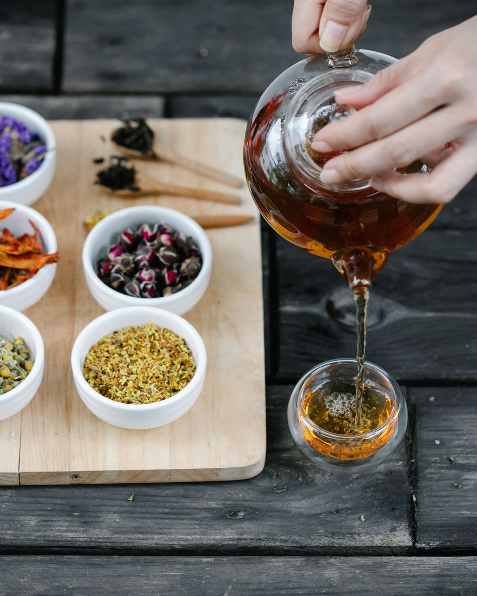
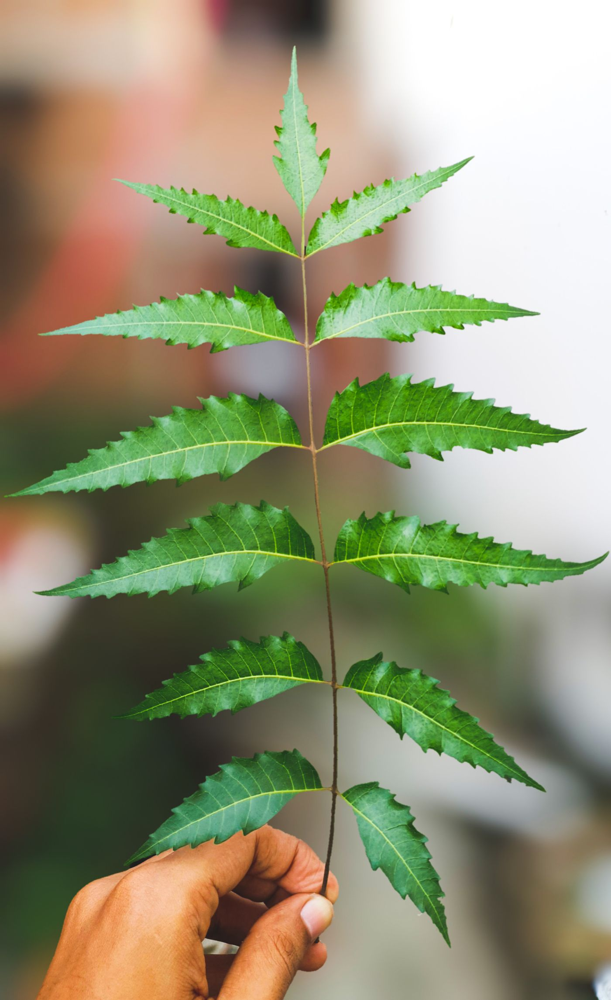

The VanaVeda Store
Botanical goods for unhurried rituals.
Considered teas, therapeutic oils, supplements, clean skincare, and dedicated Ayurvedic hair care with transparent ingredients and grounded directions.
- Transparent ingredient lists
- Verified botanical sourcing
- Grounded daily directions
- No miracle claims


Shop by category
Five considered collections.

Dedicated Collection
Ayurvedic hair & scalp care.
Time-tested botanicals—Bhringraj, Amla, Brahmi, and Shikakai—prepared for root resilience, scalp equilibrium, and strand nourishment.
Most reached for
A thoughtful place to begin.
Customer staples across morning brews, body massage, and everyday skincare.

A Quieter Approach
Start with what you can repeat.
VanaVeda is organized around small routines, not dramatic promises. Choose one product, read the label, and notice how it fits your day.
Know the ingredient
Read its form, source context, and practical use note before purchasing.
Follow the direction
Use only the amount, steep time, or topical method noted on the verified label.
Adjust thoughtfully
Observe how your body responds. Seek qualified guidance when personal health needs arise.
Shop by ingredient
Explore our foundational botanicals.
Select a plant to see how traditional Ayurvedic principles translate into our catalog.
Tulsi
Ocimum tenuiflorum
An aromatic adaptogenic herb steeped for unhurried mornings, respiratory clarity, and daily grounding in traditional tea rituals.
Integrity & Transparency
Evidence before emblem.
At VanaVeda, product claims are tied directly to verifiable batch documentation, botanical identity records, and facility compliance standards.
We believe customers deserve real documentation rather than cosmetic trust badges. Review our complete document transparency register and claim verification framework.

Clinical Guidance
Book an Ayurvedic Doctor Consultation.
Looking for personalized wellness recommendations? Connect directly with licensed Ayurvedic practitioners for structured, one-on-one health and ritual guidance.